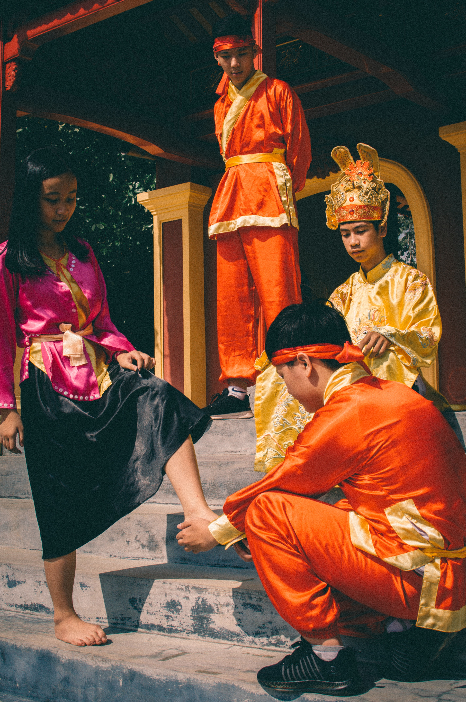

Đại Nội Huế
bao gồm Hoàng Thành và Tử Cấm Thành với hững công trình cung điện nguy nga, đền đài và miếu thờ bề thế, đồ sộ mang đậm nét kiến trúc thời nhà Nguyễn.
--Thành phố Huế, Thừa Thiên Huế--
Hồ Thuỷ Tiên
Bao trùm cả công viên là khung cảnh hoang tàn đến rùng rợn. Đặt chân đến đây, du khách sẽ cảm nhận được cảm giác u tịch như bước ra từ cuốn tiểu thuyết kinh dị.
--Thủy Bằng, Tx. Hương Thủy, Thừa Thiên Huế--
Lăng Tự Đức
là lăng đẹp nhất trong những lăng tẩm của các đời vua nhà Nguyễn bởi sự hài hoà giữa khung cảnh thiên nhiên “sơn thuỷ hữu tình” và không gian kiến trúc bao la, rộng lớn.
--thôn Thượng Ba, Thành phố Huế, Thừa Thiên Huế--
Sông Hương
Là biểu tượng và cũng là niềm tự hào của người dân xứ Huế, sông Hương hiền hoà như một dải lụa dài mềm mại dài miên man giữa mảnh đất Kinh kỳ mộng mơ.
--Thành phố Huế, Thừa Thiên Huế--
Chợ Đông Ba
chợ không chỉ là nơi mua sắm cho người dân nội đô mà còn là nơi được nhiều du khách ghé thăm để sắm quà lưu niệm cho người thân và bạn bè cho chuyến du lịch Huế đầy thú vị.
--Thành phố Huế, Thừa Thiên Huế--
Cơm hến
...trộn lẫn các thức hến, tóp mỡ chiên giòn, mắm ruốc, rau sống, hoa chuối, giá đỗ, thân khoai môn trắng thái nhỏ, lạc rang… tạo nên hương vị đậm đà và cay nồng rất đặc trưng của Huế.
Bún bò Huế
Bún bò có nước dùng ngọt xương đậm đà. Thêm vào đó, sợi bún to, vừa ăn, thịt nạm, chả thơm lừng, mềm với hương vị ngon đặc trưng...là những điểm cộng.
Ốc nhồi ly
...ốc bươu trộn với thịt heo được xếp vào các chén nhỏ đặt trong nồi đất hấp chưng cất với sả, ớt. Món ăn này không chỉ giữ được mùi vị của ốc mà còn bảo đảm chất dinh dưỡng trong mỗi chén.
Chè hẻm
Ly chè đậu mát lạnh, thơm mùi vani, lá dứa và một ít béo của nước cốt dừa ngon khó cưỡng hay món chè bột lọc bọc heo quay cực kỳ độc đáo chỉ có tại Huế nhất định phải đến thưởng thức ngay.
Bánh bèo - nậm - lọc
Bánh bèo màu trắng, mỏng như chiếc lá. Bánh bột lọc thì được làm từ củ sắn,có nhân tôm thịt, gói bằng lá chuối. Còn bánh nậm gói lá dong được làm từ bột gạo.
Con người xứ Huế
Đặt chân lên đất Huế tôi đã cảm thấy rất ấn tượng không chỉ vì vẻ đẹp của những thắng cảnh thiên nhiên (sông Hương, núi Ngự), sự cổ kính của những đền đài, lăng tẩm… Tôi còn bị “cuốn hút” bởi con người Huế với tính cách dịu dàng, dễ thương ...
Đặt chân lên đất Huế tôi đã cảm thấy rất ấn tượng không chỉ vì vẻ đẹp của những thắng cảnh thiên nhiên (sông Hương, núi Ngự), sự cổ kính của những đền đài, lăng tẩm… Tôi còn bị “cuốn hút” bởi con người Huế với tính cách dịu dàng, dễ thương pha lẫn sự kín đáo e ếp, với giọng nói “dạ, thưa” đến say lòng. Từ tất cả sự lôi cuốn đó, tôi đã quyết định gắn bó với Huế và thử tìm sự lý giải về tính cách của người Huế là như thế nào?

Trong con mắt của một người xứ Bắc tuy chưa thực sự hiểu sâu về người Huế, nhưng tôi nhận thấy tính cách con người Huế được thể hiện qua:
Người Huế gần gũi và thân thiện.
Người Huế luôn nở nụ cười trên môi khi gặp người khác. Luôn nhận được sự quan tâm, hỏi han và giúp đỡ của người Huế những lúc gặp khó khăn. Đó là điều đầu tiên tôi cảm nhận được khi tôi ở trong khu nhà trọ trong thời gian đầu tôi vào Huế.
Người Huế đi ngủ sớm.
Huế không sống nhiều về đêm như những thành phố lớn khác, khoảng 10h kém là tất cả đã về nhà, không sinh hoạt gia đình thì làm việc hoặc đi ngủ sớm, đường phố Huế về đêm chủ yếu là khách du lịch và sinh viên ngoại tỉnh, những người vẫn chưa thể quen với nếp sinh hoạt đó. Ở nhiều khu trọ cho sinh viên, chủ nhà luôn thông báo cho sinh viên đến ở trọ giờ giới nghiêm là 22h. Huế yên bình nhưng về đêm thì càng yên bình hơn nữa, người ta có thể ngồi trầm tư mà không lo ai quấy rối giữa đêm.
Người Huế sống hoài cổ và thủ cựu.
Điều này thể hiện ở cái cách mà người Huế tiếp nhận cái mới, cái lạ, tất cả những gì mới và lạ du nhập vào Huế đều cần phải có một thời gian dài, phải nói là rất lâu mới có thể bám rễ và phát triển ở Huế, phải trải qua một quá trình thẩm thấu, chọn lọc thật kĩ thì những cái đó mới được người Huế đón nhận, từ nghệ thuật cho đến văn hóa, thể thao và nhiều cái khác nữa. Chẳng hạn, ở Huế người ta chuộng nghe nhạc tiền chiến, nhạc Trịnh Công Sơn hơn là nhạc trẻ – nhạc thị trường, thị trường nhạc trẻ ở Huế không sôi động như các thành phố khác. Văn hóa cũng vậy, phần đông người Huế vẫn quý trọng mái tóc và tà áo dài của người con gái, nhẹ nhàng và thanh thoát, tất cả mọi người đều quý trong những giá trị truyền thống, những cái cốt lõi, cái tinh túy đã song hành với họ trong cuộc sống.
Người Huế sống nền nếp và gia phong.
Bước vào các gia đình Huế người ta sẽ cảm nhận ngay được rằng người Huế sống rất có phép tắc từ già tới trẻ, từ đàn ông con trai đến đàn bà con gái, tất cả tuân theo một khuôn phép đã có trước đó từ rất lâu đó chính là truyền thống nền nếp gia phong. Người lớn tuổi được kính trọng và đề cao, lớp trẻ chỉ cần đi vào nhà thấy khách đến chơi là phải thưa, đi thì phải xin phép gia đình và khách. Người đàn ông trong gia đình được đề cao, đặc biệt là người chồng, người cha có một ví trị hết sức quan trọng, là trụ cột của cả gia đình. Người cha, người chồng trong gia đình có quyền quyết định mọi chuyện của gia đình, ý kiến của gia đình và đặc biệt của người cha ảnh hưởng rất nhiều đến sự lựa chọn của con cái trong gia đình.
Người Huế sống tiết kiệm và chắt chiu.
Khác hẳn như ở miền Nam, chỉ có Huế là thành phố không chịu ảnh hưởng văn hóa tiêu dùng phương Tây trong thời kì chủ nghĩa thực dân mới nô dịch nước ta. Khác hẳn với thành phố Đà Nẵng và Thành phố Hồ Chí Minh, người Huế tiêu tiền rất cẩn thận, tính toán chi li mọi khoản, cân nhắc rất nhiều khi quyết định chi tiêu tiền bạc, đối với Đà Nẵng và Thành phố Hồ Chí Minh thì người ta không phải suy nghĩ nhiều đến thế, cứ có tiền là tiêu cái đã, làm hôm nay thì tiêu hôm nay, ngày mai tiêu ngày mai. Thời tiết khắc nghiệt, mưa bão nhiều, không thuận lợi trong phát triển kinh tế, thiên tai thất thường khiến cho người Huế luôn tích trữ lương thực và đặc biệt là tiền bạc cho những lúc cần dùng đến, rồi ốm đau bệnh tật,… tất cả tạo nên tính cách rất riêng của Huế.
Người Huế cầu kì trong chế biến ẩm thực.
Với người Huế, nấu món ăn là để thể hiện sự đam mê nghệ thuật. Với quan niệm “ăn” trước hết là “ăn bằng mắt”, nên người phụ nữ Huế rất dụng công trong việc tạo hình các món ăn một cách nghệ thuật, tạo nên sự truyền cảm mạnh mẽ mỗi khi ngồi vào bàn tiệc. Tất cả kinh nghiệm chế biến được truyền dạy từ thế hệ này qua thế hệ khác và ngày càng hoàn thiện hơn.
Người Huế sống thánh thiện.
Đây là đánh giá của phần đông những người được hỏi, theo họ người Huế sống rất hiền lành, họ thích làm việc thiện, thường xuyên đi chùa lễ Phật để tích đức cho quan cháu.
Người Huế sống gần gũi với thiên nhiên. Điều này được thể hiện cụ thể nhất trong lối kiến trúc Nhà Vườn mà chỉ ở Huế mới có. Những người đến Huế rất thích những ngôi nhà vườn của Huế, những ngôi là rợp bóng mát của cây trái.
Tác giả bài viết: Sưu tầm